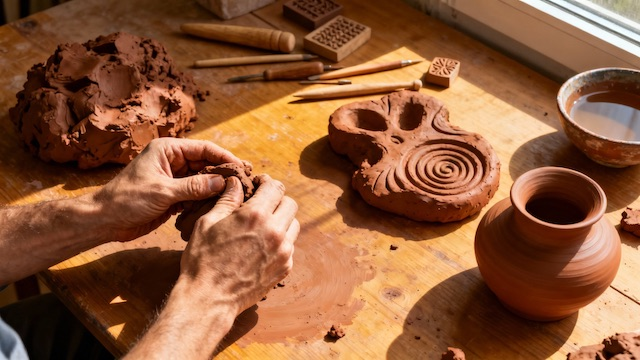

Harness the healing power of creative expression through evidence-based art therapy, journaling, music, and movement—accessing emotions and trauma that words alone cannot reach.
Learn research-backed expressive arts therapy: Pennebaker's expressive writing paradigm for trauma processing, art therapy techniques for anxiety and depression, music therapy for emotional regulation, and dance/movement therapy for embodied healing. Discover how creativity activates 600+ biological mechanisms (Lancet Psychiatry 2020) to transform mental health through visual arts, writing, music, and movement.
This course is included in the Digital Wellness Academy platform for licensed practices.
Access This Course → Practice Licensing InfoCreative expression operates through powerful neurobiological mechanisms that make it uniquely effective for mental health healing—particularly for processing trauma and emotions that resist verbal articulation. A groundbreaking 2020 review published in Lancet Psychiatry identified over 600 distinct biological pathways through which creative engagement improves mental health, spanning neurotransmitter regulation, stress hormone modulation, immune system function, and neural network integration. Art therapy activates the default mode network (involved in self-reflection and emotional processing) while simultaneously engaging focused attention, creating meditation-like states that promote integration between the emotional limbic system and rational prefrontal cortex.
This bilateral brain stimulation during creative activities mirrors the mechanisms of EMDR therapy, helping integrate traumatic memories and overwhelming emotions without requiring explicit verbal narration of the trauma. Dr. James Pennebaker's pioneering research at the University of Texas established expressive writing as a powerful intervention—just 15–20 minutes of writing about traumatic experiences for 3–4 consecutive days produces measurable improvements in immune function, reduces physician visits by 43%, decreases depression and anxiety symptoms, and facilitates faster physical wound healing.
This comprehensive course provides evidence-based training in multiple creative modalities proven effective for mental health treatment: visual arts therapy (drawing, painting, collage, sculpture, mixed media), expressive writing and journaling (Pennebaker's paradigm, narrative therapy, poetry), music therapy (listening, creation, improvisation for mood regulation), and dance/movement therapy (embodied processing, somatic healing).
You'll learn the neuroscience behind why creativity heals—including how art-making reduces cortisol by 25% within 45 minutes regardless of artistic skill, increases dopamine and serotonin naturally, activates the parasympathetic nervous system for stress reduction, and creates new neural pathways for emotional regulation. The course covers trauma-informed approaches that emphasize safety, choice, and pacing, ensuring creative expression supports healing without re-traumatization.
You'll master color psychology for intentional mood regulation (blues calm anxiety; warm colors energize), symbolism and metaphor in creative work, and how to interpret your own creative expressions for self-discovery and insight. No artistic skill is required—the course teaches simple, accessible techniques that anyone can use immediately.
This course is built on peer-reviewed research from leading institutions and published studies in top-tier medical and psychological journals.
Published in one of psychiatry's most prestigious journals, this systematic review analyzed over 900 publications examining relationships between creative engagement and mental health outcomes. Researchers identified more than 600 distinct biological, psychological, and social mechanisms through which creative activities improve mental wellbeing, including neurotransmitter regulation (dopamine, serotonin, endorphins), stress hormone modulation, immune system enhancement, social connection, emotional regulation and expression, meaning-making and identity formation, and neuroplasticity. The review concluded that creative arts should be integrated into mainstream mental health treatment. The World Health Organization's 2019 report reached similar conclusions based on analysis of over 3,000 studies.
Dr. James Pennebaker's groundbreaking research at the University of Texas, spanning over three decades and published in Journal of Experimental Psychology, Psychosomatic Medicine, and American Psychologist, established expressive writing as an evidence-based intervention for trauma processing. His studies demonstrate that 15–20 minutes of writing about traumatic or deeply emotional experiences for 3–4 consecutive days produces: 43% reduction in physician visits over six months, enhanced immune function measured by T-lymphocyte response, significant decreases in depression and PTSD symptoms, improved working memory and academic/work performance, faster physical wound healing, reduced blood pressure and heart rate, and better sleep quality. The mechanism works by helping individuals construct coherent narratives from fragmented traumatic memories, facilitating cognitive processing and reducing the physiological burden of suppressed emotions.
Meta-analyses published in The Arts in Psychotherapy and Journal of the American Art Therapy Association consistently demonstrate moderate-to-large effect sizes for art therapy in treating depression (effect size 0.58–0.72), anxiety disorders (0.49–0.65), PTSD and trauma (0.61–0.77), and chronic stress (0.52–0.68). A 2018 randomized controlled trial found that 45 minutes of art-making significantly reduced cortisol levels by 25% regardless of artistic experience or skill level. Brain imaging studies using fMRI show that creative engagement activates the default mode network (self-reflection, emotional processing) while simultaneously engaging task-positive networks (focused attention), creating unique neural integration patterns that facilitate emotional regulation and trauma processing.
Studies from the American Music Therapy Association and published in Journal of Music Therapy demonstrate that music engagement—both active (playing, singing, improvising) and receptive (listening)—produces measurable mental health improvements. Music synchronizes neural oscillations across brain regions, enhancing connectivity between emotional and cognitive networks. It triggers dopamine release in the nucleus accumbens (reward center), reduces amygdala reactivity to stress, and entrains heart rate variability and breathing patterns to promote parasympathetic activation. Clinical trials show music therapy effectively reduces anxiety (40% symptom reduction), improves mood in depression, and enhances emotional expression in trauma survivors.
Research published in American Journal of Dance Therapy and Body, Movement and Dance in Psychotherapy establishes dance and movement therapy as effective interventions for trauma, particularly for processing emotions and memories stored somatically (in the body). DMT works by accessing the body's implicit memory systems where trauma is often encoded below conscious awareness. Studies show DMT significantly reduces PTSD symptoms, decreases dissociation, improves body awareness and interoception (sensing internal states), enhances emotional regulation, and increases stress resilience. The bilateral movement patterns in many dance forms mirror EMDR therapy mechanisms, facilitating neural integration and trauma processing.
Research from Johns Hopkins University published in NeuroImage using fMRI demonstrates that creative engagement produces flow states characterized by reduced activity in the dorsolateral prefrontal cortex (self-monitoring, critical judgment) while maintaining activity in medial prefrontal regions (self-expression, emotional processing). This neural signature creates optimal conditions for emotional exploration without harsh self-criticism—particularly valuable for individuals with perfectionism, shame, or self-judgment that impedes verbal therapy. Flow states during creative activities also increase endogenous opioid and endocannabinoid release, producing natural mood elevation and stress reduction.
The American Art Therapy Association, American Music Therapy Association, American Dance Therapy Association, and National Coalition of Creative Arts Therapies Associations all maintain evidence-based practice guidelines. The World Health Organization's 2019 report identified creative arts interventions as effective treatments for mental health conditions based on analysis of over 3,000 studies.
Absolutely not—and this is one of the most important findings from art therapy research. A landmark 2018 study measured cortisol levels before and after 45 minutes of art-making in 39 adults: 75% showed significant cortisol reduction (average 25% decrease) regardless of artistic skill level or prior creative experience. The therapeutic benefits of creative expression are completely independent of artistic ability.
This course emphasizes process over product—the healing happens in the act of creating, not the final aesthetic result. Simple, accessible techniques anyone can use regardless of background:
Many participants find that releasing the pressure of creating "good art" frees them to experience creativity's profound mental health benefits for the first time. You're more creative than you think—creativity is a natural human capacity, not a special talent reserved for artists.
The 2020 Lancet Psychiatry review identified over 600 distinct pathways. Key mechanisms:
Neurobiological: Creative engagement naturally increases dopamine, serotonin, and endorphins while reducing cortisol up to 25% within 45 minutes. Art-making activates both the default mode network (self-reflection, emotional processing) and task-positive networks (focused attention), creating unique neural integration patterns similar to meditation but potentially more accessible. Bilateral stimulation from drawing, painting, sculpting, and dancing engages both brain hemispheres, mirroring EMDR therapy mechanisms.
Psychological: Many emotions and traumatic experiences are stored in the brain's right hemisphere without verbal language attached. Art, music, and movement bypass the need for words, allowing you to access and process feelings that resist verbal articulation. Creating art about difficult experiences provides psychological distance—exploring emotion through creative metaphor rather than direct verbal confrontation, which can feel safer and less overwhelming.
Narrative construction: Pennebaker's research shows that organizing fragmented emotional experiences into coherent creative narratives (through writing, visual storytelling, music) helps the brain process and integrate trauma, reducing its physiological and psychological impact. Creative flow states also decrease activity in the brain's "critic" regions, allowing authentic emotional expression without harsh self-judgment.
Dr. Pennebaker's three decades of research established expressive writing as one of the most well-documented interventions for trauma processing. Writing about traumatic experiences for just 15–20 minutes per day for 3–4 consecutive days produces measurable improvements: 43% fewer physician visits, enhanced immune function, reduced depression and PTSD symptoms, improved sleep, and better work/academic performance.
How it works: Trauma is often stored as fragmented sensory and emotional memories without coherent narrative structure. This fragmentation keeps trauma intruding as flashbacks, nightmares, or overwhelming emotions. Expressive writing helps construct a coherent narrative from these fragments, organizing the experience in a way your brain can process and integrate—literally reorganizing how trauma is stored neurologically.
Safety considerations: For most people, yes—but start with manageable emotions rather than your worst trauma. The course teaches titration techniques (time limits, grounding exercises, managing activation intensity) to prevent overwhelm. Those with active PTSD, severe dissociation, or recent trauma should do this work alongside a therapist. The privacy of writing allows complete honesty without fear of judgment.
Different creative modalities work through distinct mechanisms and suit different therapeutic goals:
Most people benefit from combining multiple modalities rather than choosing just one. The course includes assessments to help you identify which approaches resonate most with your learning style, emotional needs, and healing goals.
Yes—meta-analyses show effect sizes of 0.49–0.65 for anxiety disorders and 0.58–0.72 for depression, comparable to established psychological treatments.
For Anxiety: Intentionally working with cool colors (blues, greens, purples) activates the parasympathetic nervous system. Repetitive activities (coloring, zentangle, rhythmic music/movement) provide soothing present-moment focus. Externalizing worries through drawing or writing creates psychological distance and reduces rumination. Music entrainment slows heart rate and breathing, shifting physiology out of fight-or-flight.
For Depression: Small creative activities provide achievable goals and reactivate the dopamine system even when nothing feels enjoyable (behavioral activation). Warm energizing colors provide subtle mood elevation. Expressive writing helps identify and challenge negative thought patterns maintaining depression. Creating tangible work provides concrete evidence against depression's helplessness narrative. Depression often involves difficulty articulating emotions—creative expression bypasses this verbal block entirely.
Pennebaker's expressive writing protocol is just 15–20 minutes for 3–4 days—not a daily lifelong commitment. Art therapy research shows benefits from 45-minute sessions once or twice weekly, not hours every day. Even 5–10 minutes provides measurable benefits.
Integrate creativity into existing activities: Expressive journaling with morning coffee (5–10 minutes), therapeutic music listening during commute, doodling while watching TV, gentle movement breaks during the work day (3–5 minutes), art supplies in common areas for spontaneous sessions.
Low-barrier options requiring minimal setup: Journaling needs only pen and paper; adult coloring books require only colored pencils; music therapy can be purely receptive (just listening); movement practices happen in regular clothes in your living room.
Many participants find creative expression actually creates time by reducing anxiety-driven rumination, improving sleep efficiency, and increasing focus and productivity. A 10-minute morning journaling practice that prevents an afternoon anxiety spiral has saved you time overall.
If you or someone you know is experiencing a mental health crisis, call or text 988 (Suicide & Crisis Lifeline) for immediate support.
Access all 29 evidence-based courses covering every dimension of mental wellness.
View All Courses →Join thousands learning evidence-based mental health strategies. No artistic skill required. Start with Lesson 1 today.
Start Course Now →